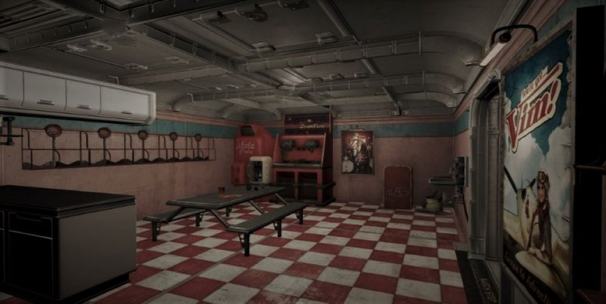

Vcházíš do bývalé jídelny, obyvatelé museli mít vešekerý komfort, měly zde vše od hlavních jídel přes různé druhy polívek až po vešké druhy dortíků, zákusků a pochutin. Při hledání čehokoliv co by se mohlo hodit, si říkáš co se asi s obyvately stalo, vyhladovět nemohly.
Po nějakém čase nacházíš nějaké konzervi a pár lahvý čisté vody, nebo aspoň tak vypadají.
jít zpět